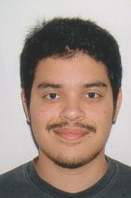

Curriculum Vitae
Bryan Barral Medina

Datos Personales
C/Seguidilla, 18
Gran Tarajal
Tuineje
Las Palmas
690808003
bjbm@hotmail.com
Formación académica
2012
- Bachiller Ciencias y Tecnologías/IES Gran Tarajal
2015
- B2 Inglés EOI Fuerteventura
Experiencia
- Mayo 2017 - Octubre 2017
Recepcionista/CEM Caleta de Fuste
Datos adicionales
Alto sentido de la responsabilidad.
Gran capacidad de aprendizaje.
Ordenado y Puntual.
Disponibilidad horaria e inmediata.
Carnet de conducir y Vehículo propio.